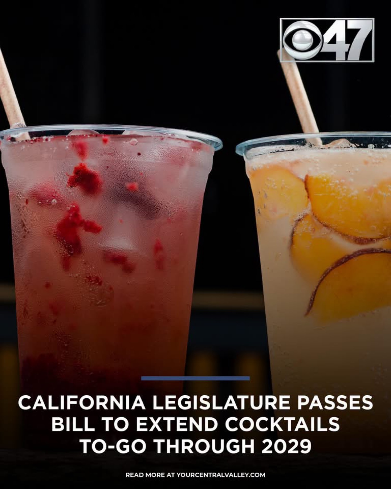
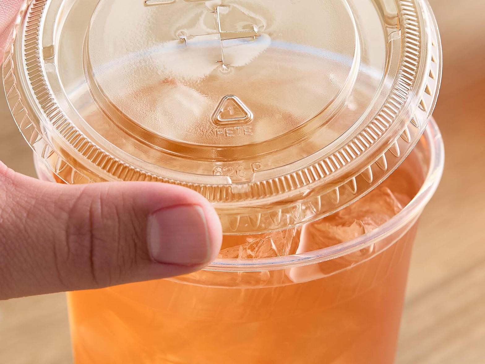
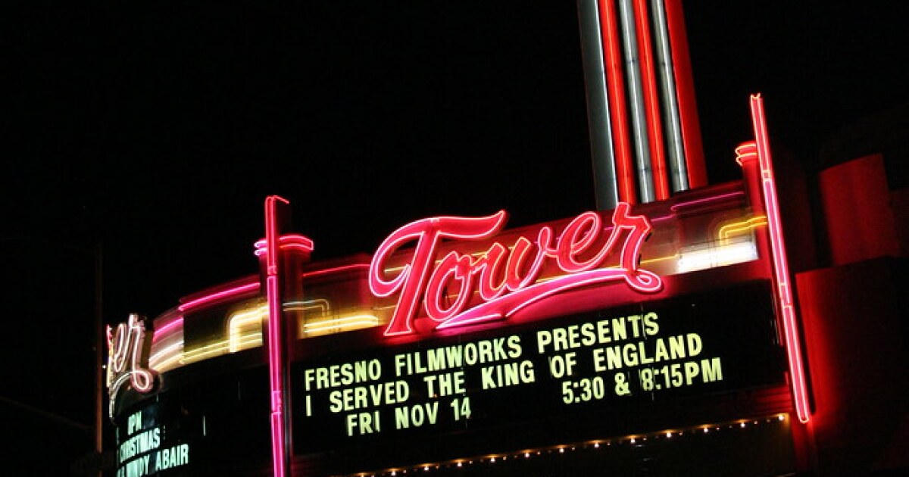

Clock
Through 2029
Current statute was set to die Jan. 1, 2027.
How
Pickup only
You walk in. You show ID. No DoorDash cocktail.
Limit
Two with a meal
Fresh cocktails need a bona fide meal. 4.5 oz spirits max.
What actually passed
CBS 47 reported that the California Legislature passed a bill extending cocktails-to-go through 2029. That is the local headline. The underlying program is not new. It is the pandemic leftover written into Business and Professions Code section 23401.5 by Senate Bill 389, signed in 2021, and scheduled to repeal on January 1, 2027.
The 2026 session had a live vehicle to push that sunset. Assembly Bill 2663 (Rogers) proposed stretching the same off-sale privileges as far as December 31, 2031. Local television used 2029. Either way, restaurants that already figured out sealed lids and meal tickets get more years of that side revenue. The governor still has to sign whatever landed on the desk. Until the chaptered bill is posted, treat the year as reported, not carved in granite.
The rules that did not change

California ABC is blunt about this. A freshly made cocktail or a pour of wine is an open container. It only leaves the building if all of this is true:
- The place is a bona fide public eating place with the right on-sale license, usually Type 41, 47, or 75. A bar that does not serve real food is out.
- The drink is ordered and picked up in person. Delivery of mixed drinks is not in this statute.
- The buyer shows ID at pickup and is the person who ordered.
- The cup has a secure lid or cap sealed so you cannot drink without breaking the seal. A straw hole has to be sealed shut.
- The cup is labeled so anyone can tell it holds alcohol.
- One bona fide meal, two mixed drinks. Mixed drinks cannot pack more than 4.5 ounces of distilled spirits.
- Single-serve wine in this channel sits between 187 ml and 355 ml.
Manufacturer-sealed cans and bottles are a different pile. Those can leave without the meal rule, but they still have to be picked up at the licensed premises. They still cannot be delivered under this section.
What it means on Olive

Tower District is a food-and-bar strip. The places that win under this law are the ones that already plate a meal: the rooms on Olive, the kitchens that can drop a burger or a plate of pasta next to two sealed cups. The Enchanted Pour and every other house that kept tables and a kitchen stay in the game. A taproom with no food ticket does not suddenly become a liquor store.
The open-container law in the car did not get rewritten. A sealed to-go cocktail in the trunk is one thing. A cup in the cupholder with the lid cracked is still a problem. That is on the driver, not the cook.
This is also not a porch program. High Tower Porch still sells a dollar water and a free signal. That is a different product. The legislature just decided restaurants can keep selling a second product: dinner plus two sealed drinks, picked up at the counter, through the end of the decade if the governor concurs.
Why restaurants wanted the extra years
To-go cocktails were a lockdown patch. Then they became a habit. Margins on mixed drinks are better than margins on most plates. A sealed cup next to takeout is cheap incremental revenue for a kitchen that already has the staff on the clock. Industry groups have been asking states to stop sunsetting the privilege every few years. More than 30 states made some version of it permanent. California keeps renting it out in multi-year chunks.
The other alcohol fight this year went the other way. Craft distillers are watching direct-to-consumer shipping hit another wall. Wine wholesalers, Teamsters, and distributors spent real money to keep that channel closed. Cocktails-to-go from a restaurant is a smaller, more controlled hole in the three-tier wall. That is why it can pass while shipping dies.
District read
If you run a kitchen on Olive, this is permission to keep the sealed-cup line on the ticket printer. If you run a bar with no food, it is not your bill. If you live here, it is two drinks with dinner and a walk to the car with the lid intact. That is the whole product.
Watch the chaptered bill number and the governor's signature. Then watch whether ABC adds conditions on anyone who treats "meal" as a basket of fries and four cocktails. The statute already gives the department that hook.
Sources
- CBS 47 / YourCentralValley.com graphic and report: California Legislature passes bill to extend cocktails to-go through 2029.
- California ABC, "Sales of Alcoholic Beverages To-Go" and ABC FAQ on non-manufacturer-sealed containers. Business and Professions Code § 23401.5 (SB 389, 2021; current sunset January 1, 2027).
- Assembly Committee on Governmental Organization analysis of AB 2663 (Rogers), April 8, 2026: proposed extension of the same off-sale privileges.
- LegalClarity, "Can You Take Alcohol To Go in California?" (updated August 2026), summarizing meal, two-drink, seal, and pickup rules.
- Distilled Spirits Council archives on SB 389 (2021) and later state-by-state to-go extensions.